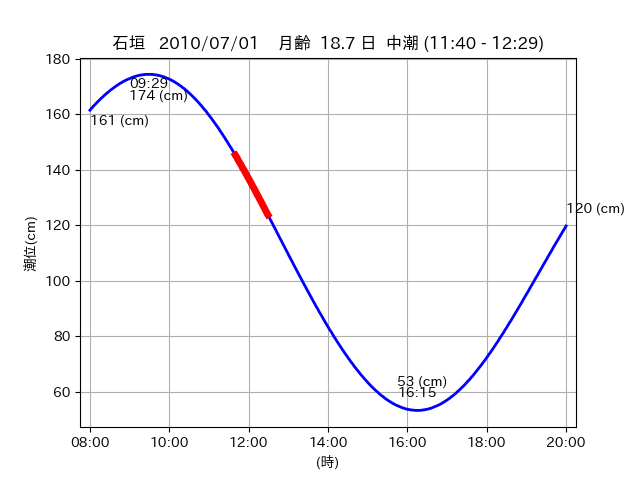
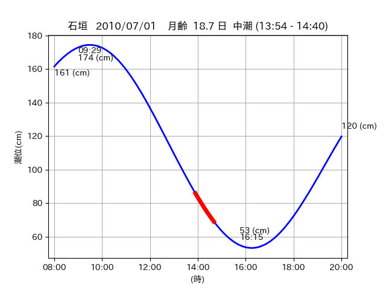

<!DOCTYPE html>
<html>
<head>
    
    <meta http-equiv="content-type" content="text/html; charset=UTF-8" />
    
        <script>
            L_NO_TOUCH = false;
            L_DISABLE_3D = false;
        </script>
    
    <style>html, body {width: 100%;height: 100%;margin: 0;padding: 0;}</style>
    <style>#map {position:absolute;top:0;bottom:0;right:0;left:0;}</style>
    <script src="https://cdn.jsdelivr.net/npm/leaflet@1.9.3/dist/leaflet.js"></script>
    <script src="https://code.jquery.com/jquery-3.7.1.min.js"></script>
    <script src="https://cdn.jsdelivr.net/npm/bootstrap@5.2.2/dist/js/bootstrap.bundle.min.js"></script>
    <script src="https://cdnjs.cloudflare.com/ajax/libs/Leaflet.awesome-markers/2.0.2/leaflet.awesome-markers.js"></script>
    <link rel="stylesheet" href="https://cdn.jsdelivr.net/npm/leaflet@1.9.3/dist/leaflet.css"/>
    <link rel="stylesheet" href="https://cdn.jsdelivr.net/npm/bootstrap@5.2.2/dist/css/bootstrap.min.css"/>
    <link rel="stylesheet" href="https://netdna.bootstrapcdn.com/bootstrap/3.0.0/css/bootstrap-glyphicons.css"/>
    <link rel="stylesheet" href="https://cdn.jsdelivr.net/npm/@fortawesome/fontawesome-free@6.2.0/css/all.min.css"/>
    <link rel="stylesheet" href="https://cdnjs.cloudflare.com/ajax/libs/Leaflet.awesome-markers/2.0.2/leaflet.awesome-markers.css"/>
    <link rel="stylesheet" href="https://cdn.jsdelivr.net/gh/python-visualization/folium/folium/templates/leaflet.awesome.rotate.min.css"/>
    
            <meta name="viewport" content="width=device-width,
                initial-scale=1.0, maximum-scale=1.0, user-scalable=no" />
            <style>
                #map_8bb5fd1e0c51de6cd282c060e17d44c7 {
                    position: relative;
                    width: 2048.0px;
                    height: 1600.0px;
                    left: 0.0%;
                    top: 0.0%;
                }
                .leaflet-container { font-size: 1rem; }
            </style>
        
</head>
<body>
    
    
            <div class="folium-map" id="map_8bb5fd1e0c51de6cd282c060e17d44c7" ></div>
        
</body>
<script>
    
    
            var map_8bb5fd1e0c51de6cd282c060e17d44c7 = L.map(
                "map_8bb5fd1e0c51de6cd282c060e17d44c7",
                {
                    center: [24.482, 124.297],
                    crs: L.CRS.EPSG3857,
                    ...{
  "zoom": 12,
  "zoomControl": true,
  "preferCanvas": false,
}

                }
            );

            

        
    
            var tile_layer_c6e9f786ba54ca72ddde716c34493504 = L.tileLayer(
                "https://cyberjapandata.gsi.go.jp/xyz/seamlessphoto/{z}/{x}/{y}.jpg",
                {
  "minZoom": 0,
  "maxZoom": 18,
  "maxNativeZoom": 18,
  "noWrap": false,
  "attribution": "\u5730\u7406\u9662\u5730\u56f3",
  "subdomains": "abc",
  "detectRetina": false,
  "tms": false,
  "opacity": 1,
}

            );
        
    
            tile_layer_c6e9f786ba54ca72ddde716c34493504.addTo(map_8bb5fd1e0c51de6cd282c060e17d44c7);
        
    
            var marker_46e39e92a327696453e105699880631b = L.marker(
                [24.4788, 124.2846],
                {
}
            ).addTo(map_8bb5fd1e0c51de6cd282c060e17d44c7);
        
    
            var icon_7279ca0e109137c2c81b6605db66e67c = L.AwesomeMarkers.icon(
                {
  "markerColor": "orange",
  "iconColor": "white",
  "icon": "info-sign",
  "prefix": "glyphicon",
  "extraClasses": "fa-rotate-0",
}
            );
        
    
        var popup_f17af0a62c5e071ddcb996afe3979d1c = L.popup({
  "maxWidth": "100%",
});

        
            
                var html_61cc8de6aade6d57948176f8e8ee05ca = $(`<div id="html_61cc8de6aade6d57948176f8e8ee05ca" style="width: 100.0%; height: 100.0%;"><table><tr><td></td></tr><tr><td><center>20100701 No.1 </center></table></td></tr></table</div>`)[0];
                popup_f17af0a62c5e071ddcb996afe3979d1c.setContent(html_61cc8de6aade6d57948176f8e8ee05ca);
            
        

        marker_46e39e92a327696453e105699880631b.bindPopup(popup_f17af0a62c5e071ddcb996afe3979d1c)
        ;

        
    
    
                marker_46e39e92a327696453e105699880631b.setIcon(icon_7279ca0e109137c2c81b6605db66e67c);
            
    
            var poly_line_da645a6b43b638db0db3c8f2d597e33a = L.polyline(
                [[24.4788, 124.2846], [24.4772, 124.2931]],
                {"bubblingMouseEvents": true, "color": "#00FFFF", "dashArray": null, "dashOffset": null, "fill": false, "fillColor": "#00FFFF", "fillOpacity": 0.2, "fillRule": "evenodd", "lineCap": "round", "lineJoin": "round", "noClip": false, "opacity": 1.0, "smoothFactor": 1.0, "stroke": true, "weight": 3}
            ).addTo(map_8bb5fd1e0c51de6cd282c060e17d44c7);
        
    
            var marker_3804e518f5f3d040e7395a5269103d68 = L.marker(
                [24.4798, 124.2964],
                {
}
            ).addTo(map_8bb5fd1e0c51de6cd282c060e17d44c7);
        
    
            var icon_b6a2c9e149bb9bcd2da05e71ef86c597 = L.AwesomeMarkers.icon(
                {
  "markerColor": "orange",
  "iconColor": "white",
  "icon": "info-sign",
  "prefix": "glyphicon",
  "extraClasses": "fa-rotate-0",
}
            );
        
    
        var popup_427d1c7b03e3e12428326a5643fa7820 = L.popup({
  "maxWidth": "100%",
});

        
            
                var html_8a34bbbdcbfcb1bf985c084a8a0df17b = $(`<div id="html_8a34bbbdcbfcb1bf985c084a8a0df17b" style="width: 100.0%; height: 100.0%;"><table><tr><td></td></tr><tr><td><center>20100701 No.2 </center></table></td></tr></table</div>`)[0];
                popup_427d1c7b03e3e12428326a5643fa7820.setContent(html_8a34bbbdcbfcb1bf985c084a8a0df17b);
            
        

        marker_3804e518f5f3d040e7395a5269103d68.bindPopup(popup_427d1c7b03e3e12428326a5643fa7820)
        ;

        
    
    
                marker_3804e518f5f3d040e7395a5269103d68.setIcon(icon_b6a2c9e149bb9bcd2da05e71ef86c597);
            
    
            var poly_line_a0f8cd32fc7579d425d1dae74ec4b01b = L.polyline(
                [[24.4798, 124.2964], [24.4885, 124.298]],
                {"bubblingMouseEvents": true, "color": "#FF00FF", "dashArray": null, "dashOffset": null, "fill": false, "fillColor": "#FF00FF", "fillOpacity": 0.2, "fillRule": "evenodd", "lineCap": "round", "lineJoin": "round", "noClip": false, "opacity": 1.0, "smoothFactor": 1.0, "stroke": true, "weight": 3}
            ).addTo(map_8bb5fd1e0c51de6cd282c060e17d44c7);
        
    
            var marker_41cf4a14cce2f3c9602ea78ccd9b9d1a = L.marker(
                [24.4865, 124.3032],
                {
}
            ).addTo(map_8bb5fd1e0c51de6cd282c060e17d44c7);
        
    
            var icon_b49ed88379a3f6d8d7069e742f6bb430 = L.AwesomeMarkers.icon(
                {
  "markerColor": "orange",
  "iconColor": "white",
  "icon": "info-sign",
  "prefix": "glyphicon",
  "extraClasses": "fa-rotate-0",
}
            );
        
    
        var popup_8446d7e143f883591f8c532bffa50e68 = L.popup({
  "maxWidth": "100%",
});

        
            
                var html_ca81e88eba6ed2a2910ba44f714e29ea = $(`<div id="html_ca81e88eba6ed2a2910ba44f714e29ea" style="width: 100.0%; height: 100.0%;"><table><tr><td></td></tr><tr><td><center>20100701 No.3 </center></table></td></tr></table</div>`)[0];
                popup_8446d7e143f883591f8c532bffa50e68.setContent(html_ca81e88eba6ed2a2910ba44f714e29ea);
            
        

        marker_41cf4a14cce2f3c9602ea78ccd9b9d1a.bindPopup(popup_8446d7e143f883591f8c532bffa50e68)
        ;

        
    
    
                marker_41cf4a14cce2f3c9602ea78ccd9b9d1a.setIcon(icon_b49ed88379a3f6d8d7069e742f6bb430);
            
    
            var poly_line_558c77ff98186df2c65d35db44bd0d53 = L.polyline(
                [[24.4865, 124.3032], [24.4773, 124.2905]],
                {"bubblingMouseEvents": true, "color": "#00FFFF", "dashArray": null, "dashOffset": null, "fill": false, "fillColor": "#00FFFF", "fillOpacity": 0.2, "fillRule": "evenodd", "lineCap": "round", "lineJoin": "round", "noClip": false, "opacity": 1.0, "smoothFactor": 1.0, "stroke": true, "weight": 3}
            ).addTo(map_8bb5fd1e0c51de6cd282c060e17d44c7);
        
</script>
</html>